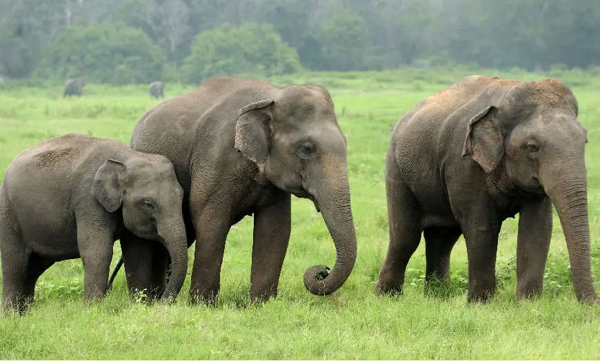
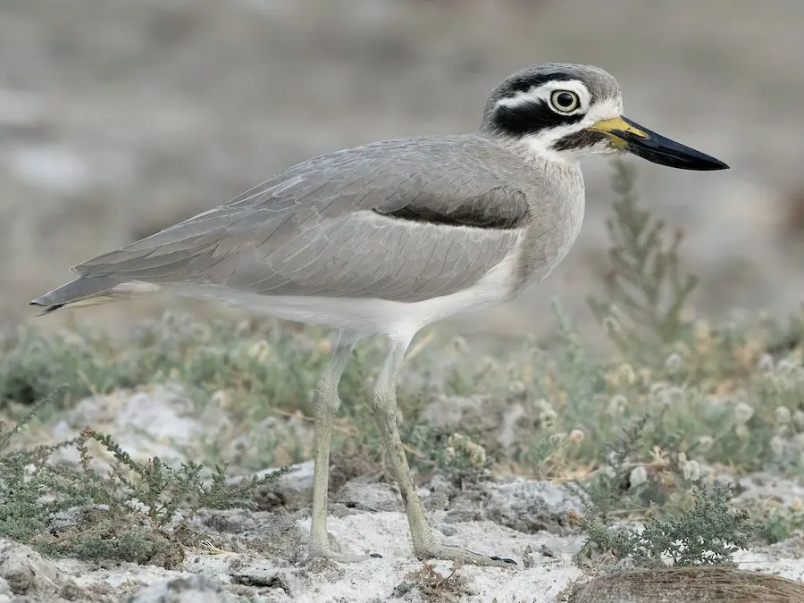
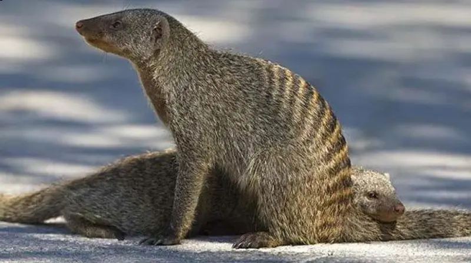
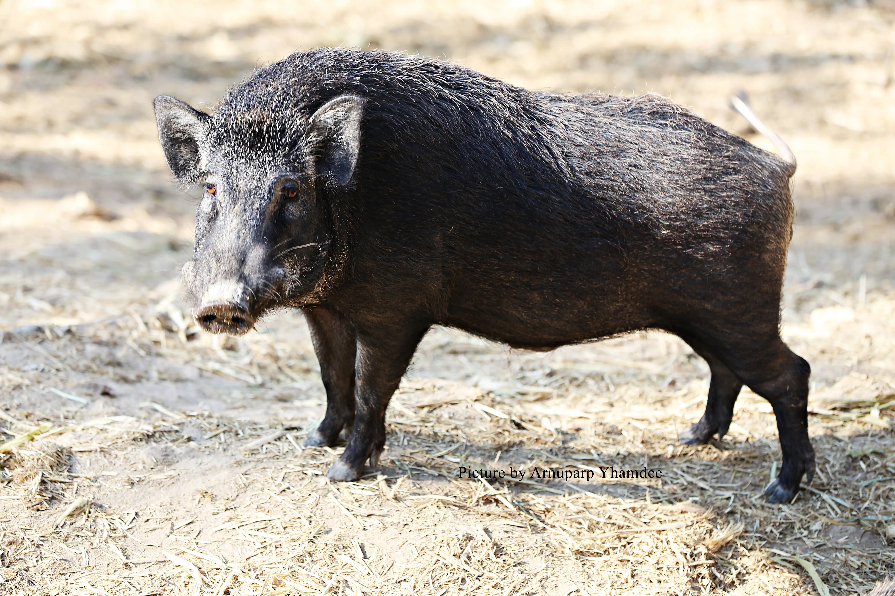
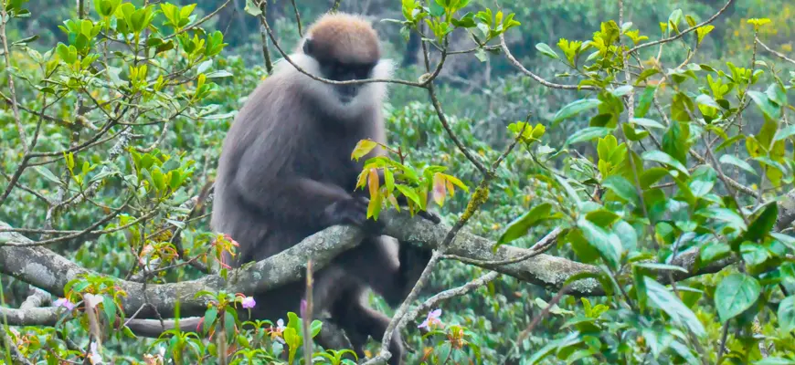

Wild Life Attractions
Wild Life Attractions

Yala national park was commenced in 1900. It is spread over 12,600km² in which 50km² is opened to visitors to explore. Yala is famous for its many numbber of lepards and water buffalos. Also you can see alot crocodiles, elephants and around 130 species of birds. Yala coast is a nesting ground for sea turtles.
Animals in Yala |
Leopard |
Elephant |
Great Stone-Curlew |

|
 |  | |
| Food | Consists of a meat diet which makes him a preditor in the jungle. | Consumes 150kg to 200kg of vegetation per day | Diet consists of insects and other invertebrates |
| habitat | Distributed across eastern and southern Asia and Africa | Lives in Asian counties such as India, Sri Lanka and Thailand | Distributed across Asia mostly in China, India, Sri Lanka, Cambodia, etc... |
| Fun Facts | Leapords are the strongest climbers of larger cats and they are capable of killing prey larger than him. | Elephants spend 16 to 18 hours a day engaging in eating food. | Great Stone-Curlew are also called "thick knee" because it's knee joint is exposed |
| These animals have a big dedication for the bio-ecosystem in Yala | |||
Sinharaja Forest Reserve is a tropical rainforest in Sri Lanka. This amazing forest consists of waterfalls, pools and ferns. Sinharaja is situated south west of the island. This forest provides home to many animals and plants in which some of them are considered to be rare.
Rare plants in Sinharaja Forest Reserve |
Hora |
Garcinia Hermonii |
Mesua Ferrea L. |

|

|

|
|
| Main Use | Timber and Resin | Used as medication for joint pain, treating worms and parasites, emptying the bowel, dysentery and other conditions | Used to make herbs and spices |
| habitat | Distributed across Asia. Mainly found in Sri Lanka | Found only in Sri Lanka | India, Sri Lanka, Indochina, Nepal, etc... |
| How they spread | By seeds | By seeds | Biotic |
| There are many more unique plants in the Sinharaja Forest. All of them should be protected. | |||
Hortain Plains is the coldest and windiest place in Sri lanka. This ecosystem is similar to ecosystems such as Mobtane evergreen forsts. Hortain Plains is spread over 3169 hectares. It provides home to a large number of animals and plants.
Animals in Hortain Plains |
Strip-necked Mongoose |
Wild Boar |
Purple-faced-leaf Monkey |
|  |  |  | |
| Food | Feeds on frogs, crabs, hares, rodents, fowl and reptiles | Eats both vegetations and animals | Largely folivorous but also eats fruits |
| habitat | Found in Western Ghats and in Sri Lanka | Found in Europe, Asia and North Africa | Found only in Sri Lanka |
| Fun Facts | It got by the black strip with white border which is in the either side of its head. | The wild boar's nose is as strong enought to dig on the ground to find food | These animals are rather shy and uneasy amoung humans |
| Due to constant human interaction these animals have been catogrized as endangered species. Actions are taken to prevent this situation. | |||